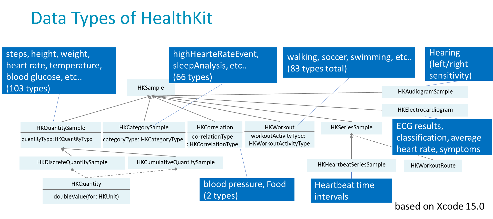
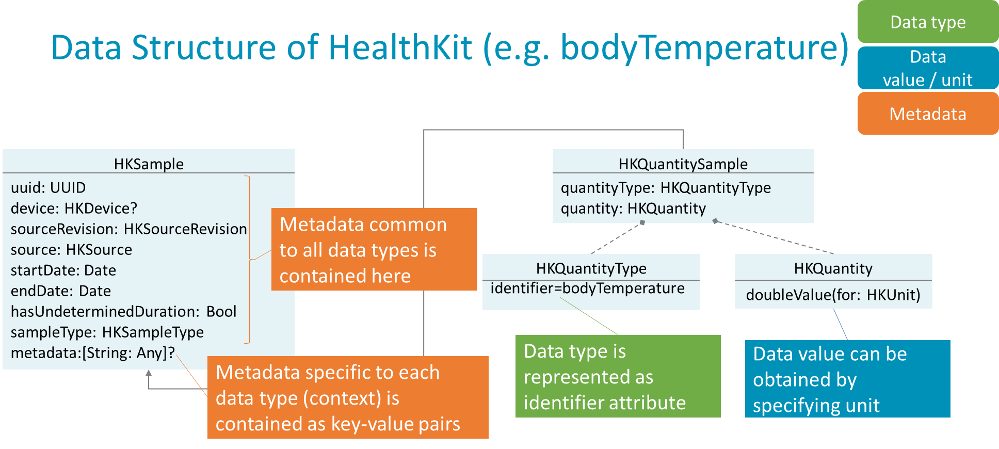
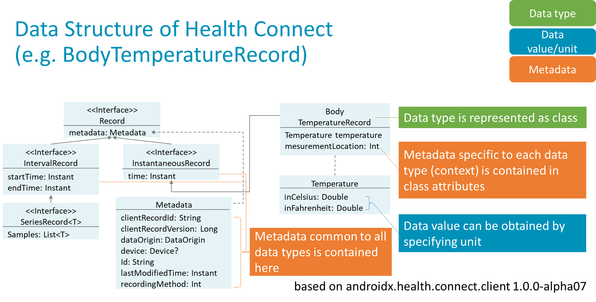

Personal Health Records
1.0.0-ballot2 - STU 1 ballot

Personal Health Records
1.0.0-ballot2 - STU 1 ballot

Personal Health Records - Local Development build (v1.0.0-ballot2) built by the FHIR (HL7® FHIR® Standard) Build Tools. See the Directory of published versions
| Page standards status: Informative |
Patient Generated Health Data (PGHD) refers to health-related data created, recorded, or gathered by patients or their caregivers, outside of clinical settings. This includes daily activity logs, self-measured vital signs, dietary records, symptom diaries, and more. PGHD complements Electronic Health Records (EHR) by providing a more holistic view of a patient’s health, especially between clinical visits.
This guide describes the principles and best practices for representing and exchanging PGHD using HL7 FHIR. It is intended for implementers of personal health record (PHR) systems, mobile health apps, and any system that collects or utilizes patient-generated data.
PGHD covers a wide range of data types, including but not limited to:
PGHD data models are influenced by several major standards and frameworks:
Apple HealthKit:
Provides a class-based data structure (e.g., HKSample, HKQuantitySample) for health and fitness data on iOS devices. Each data type (steps, heart rate, sleep, etc.) is represented as a class with associated metadata and units.
Google Health Connect:
Offers a similar class-based approach for Android, with records for each data type (e.g., ActiveCaloriesBurnedRecord, BasalBodyTemperatureRecord). Units and metadata are explicitly defined for each record.
Open mHealth:
Defines JSON schemas for each data type, focusing on interoperability and open standards (IEEE1752). Data values and units are typically contained within the same object.
Kanta PHR (Finland):
Uses FHIR-based resources for personal health data, mapping each data type to FHIR Observation or related resources. Codes and units are standardized using LOINC, SNOMED CT, and UCUM where possible.

| Category | Apple HealthKit | Google Health Connect | Open mHealth | Kanta PHR (Finland) |
|---|---|---|---|---|
| Data Types | 100+ (steps, HR, sleep…) | 40+ (steps, HR, sleep…) | JSON schema-based | FHIR-based |
| Structure | Class-based (e.g., HKSample) | Class-based (e.g., Record) | JSON object | FHIR Resource |
| Unit Handling | Value + unit object (explicit type: HKUnit) | Value + unit fields | Value + unit object | Value + unit object (FHIR Quantity) |
| Metadata | Common & per-type | Common & per-type | Standardized metadata schema | FHIR elements |
| Standardization | Proprietary | Proprietary | IEEE 1752 | FHIR, LOINC, SNOMED |


Most PGHD items in this guide are mapped to the FHIR Observation resource. Data types, units, and metadata are aligned as much as possible with existing FHIR profiles, and mappings to these major standards are considered for interoperability.
Many PGHD data items are not yet fully covered by international code systems such as LOINC and SNOMED CT. Therefore, a proprietary (temporary) code system is currently used.
The current code system serves as an interim solution and will be replaced once comprehensive coverage by international standards such as LOINC and SNOMED CT IPS is achieved.




IG © 2022+ HL7 International / Patient Empowerment.
Package hl7.fhir.uv.phr#1.0.0-ballot2 based on FHIR 4.0.1.
Generated
2026-06-11
Links: Table of Contents |
QA Report
| Version History |
 |
Propose a change
|
Propose a change